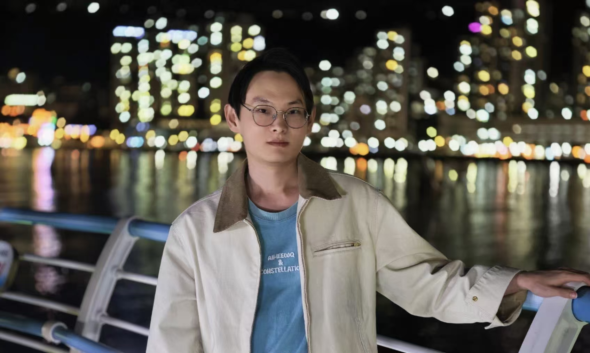
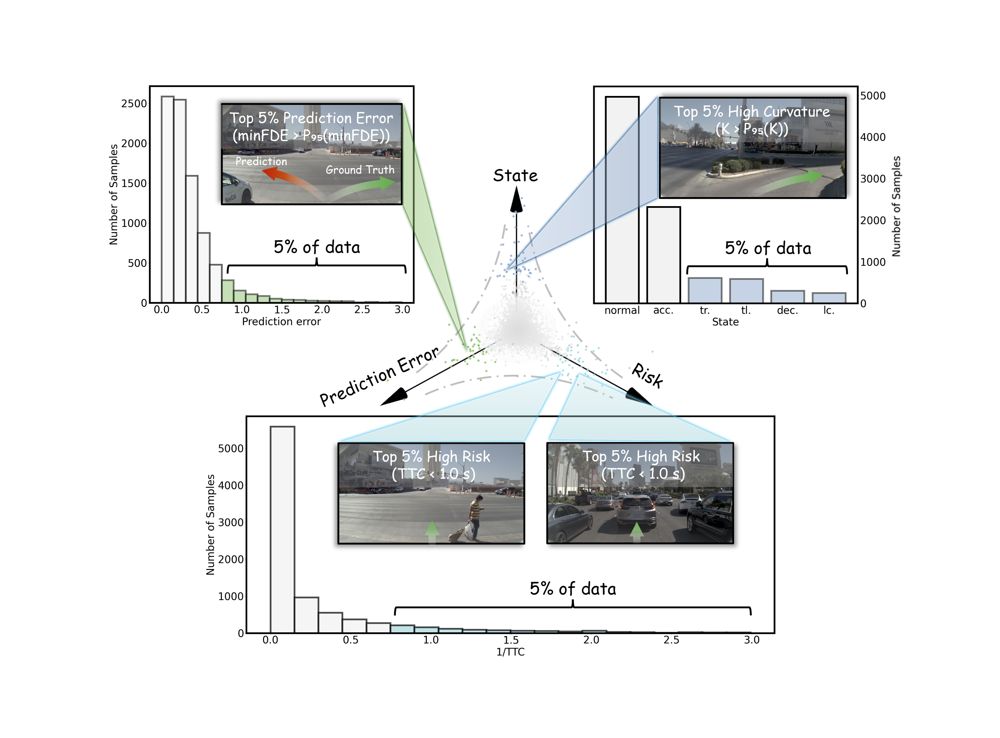
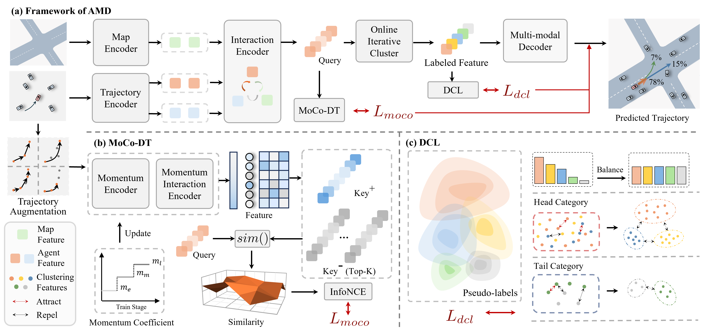
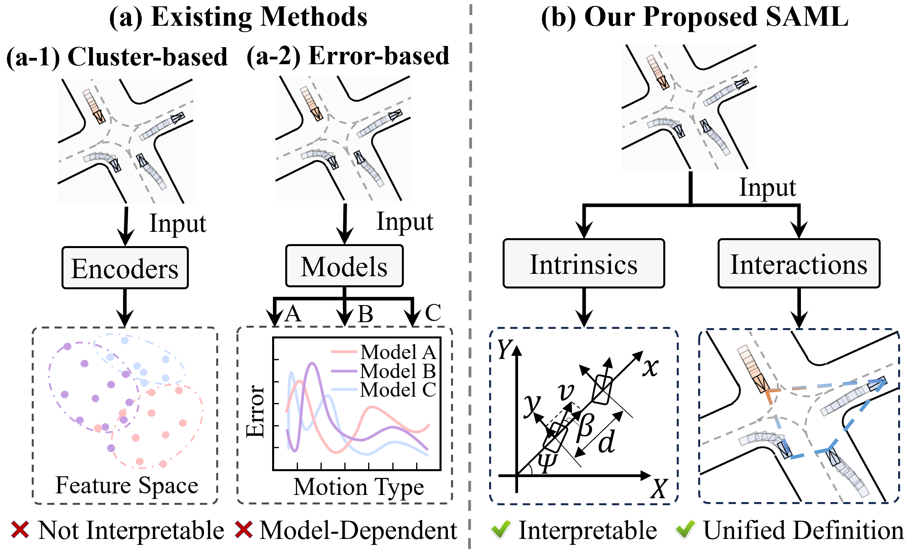
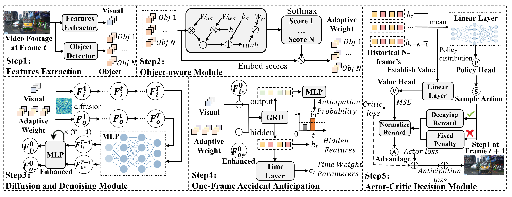
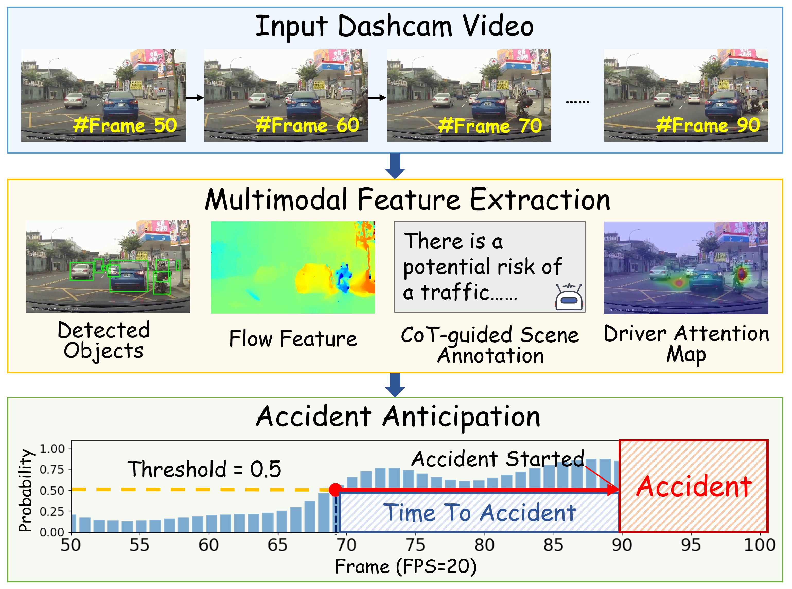

Bin Rao
Email:
yc57416@um.edu.mo
/
abin_r@163.com

About
I am a Ph.D. student at the State Key Laboratory of Internet of Things for Smart City (SKL-IOTSC), University of Macau, advised by Prof. Zhenning Li. My research focuses on building robust AI frameworks for Intelligent Transportation and Autonomous Driving, with an emphasis on trajectory prediction and planning, accident forecasting, and driver behavior recognition. I have published 10+ papers in top-tier journals and conferences, including TR-C, T-ITS, ICCV, AAAI, CVPR, and ACM MM.
News
- 2026.05 One paper accepted to TR-C.
- 2025.11 Two papers accepted to AAAI 2026.
- 2025.08 Attended the 5th MCSCT 2025, and received the Best Poster Award (First Prize).
- 2025.05 One paper accepted to ICCV 2025.
Education
-
University of Macau 08/2025 – PresentPh.D. in Civil Engineering
-
South China University of Technology 09/2021 – 06/2024M.Eng. in Transportation
-
South China University of Technology 09/2017 – 06/2021B.Eng. in Traffic Engineering
Publications
For a complete list, please see my Google Scholar profile.

Transportation Research Part C: Emerging Technologies (TR-C 2026).

ICCV 2025. [AR: 2699/11239 = 24.0%]

AAAI 2026. [AR: 4167/23680 = 17.6%]

AAAI 2026. [AR: 4167/23680 = 17.6%]

NEST: A Neuromodulated Small-world Hypergraph Trajectory Prediction Model for Autonomous Driving.
Oral
AAAI 2025. (Oral: 600/12957 = 4.6%)
CICTP 2025.
A Novel Filtering Method of Travel-Time Outliers Extracted from Large-Scale Traffic Checkpoint Data.
Journal of Transportation Engineering, Part A: Systems 2024.
Awards
- 2025.08, MCSCT 2025 Best Poster Award (First Prize)
- 2025– 2028, UM PhD Teaching Research Assistant
- 2021.09– 2024.06, University Master's Scholarship, South China University of Technology
- 2019–2020, National Encouragement Scholarship, South China University of Technology
- 2018–2019, National Encouragement Scholarship, South China University of Technology
- 2017–2018, Third-class University Scholarship, South China University of Technology
Teaching Assistant
- CIVL4020, Transportation Planning and Public Transport System, UM (Undergraduate), Spring 2026.
- CIVL2002, Surveying, UM (Undergraduate), Fall 2025.